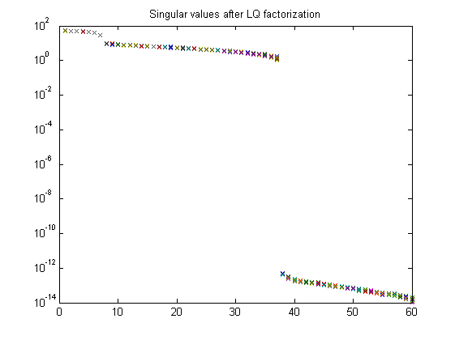
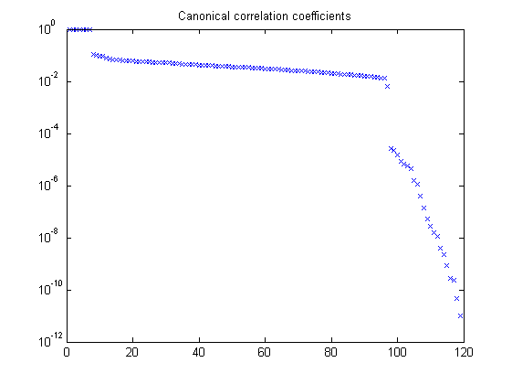
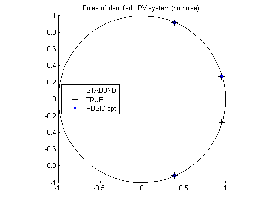

Contents
Example 23: Periodic-LPV model of a wind turbine system
close all; clear; clc;
LPV model of a wind turbine system
% LPV system h = 0.1; % sample time M = wtsLPV(h); [l,r,n,m] = size(M);
Closed-loop identification experiment
Simulation of the model in closed loop
% Parameters j = 35; % period np = 1000; % number of periods N = np*j; % number of data points % Measured data from the scheduling parameters t = (0:h:h*(N-1))'; Omr = 2*pi/(h*j); mu1 = sin(Omr*t); mu2 = sin(Omr*t+2/3*pi); mu3 = -mu1-mu2; mu = [ones(N,1) mu1 mu2]; % Distarbance and excitation signals u = [randn(N,3) randn(N,3) 1e3.*randn(N,1)]; % Simulation of the LPV system in closed loop options = simset('solver','FixedStepDiscrete'); [t,x,y] = sim('SwtsLPV',[t(1) t(end)],options,[t u mu(:,2:3)]); u = [y(:,7:9) u(:,7)]; y = y(:,1:6); % signal scaling and trending [us,Du,ys,Dy] = sigscale(u,y);
Identification of the model in closed loop
% Defining a number of constants p = 12; % past window size f = 10; % future window size % Periodic-LPV identification ckeep = [1 1 1 1 1 1; 0 0 0 1 1 1; 0 0 0 1 1 1]'; % do not keep the first three outputs of C1 and C2 pnd = pschedclust(mu,f,p); [S,x,TU,K] = pordvarx(us,ys,mu,f,p,pnd,'none','gcv',0,[2 0 0 1 0],ckeep); [x,CC] = pmodx(x,TU,K,n,[1e-12 1e-8 1e-6 1e-4],[1e-12 1e-8 1e-6 1e-4]); [A,B,C,D,K] = px2abcdk(x,us,ys,mu,f,p,[2 0 0 1 0],pnd); % Plot singular values and canonocal coefficients figure, semilogy(S,'x'); title('Singular values after LQ factorization') figure, semilogy(CC,'x'); title('Canonical correlation coefficients') 
Optimize results with the prediction error method
Mid = idafflpv(A,B,C,D,K,[],h); % [Mp,us,ys] = idafflpvA2idss(Mid,us,ys,mu(:,2:3)); % set(Mp,'SSParameterization','Free','DisturbanceModel','Estimate','nk',zeros(1,size(D,2))); % Mp = pem(iddata(ys,us,h),Mp); % Mp = idss2idafflpvA(Mp,m);
Verification results
% Simulation of real LPV system uv = [zeros(N,3) randn(N,3) 1e3.*randn(N,1)]; yv = sim(M,uv,t,[mu1 mu2 mu3]); % Simulation of identified LPV system Mid.b = B*(kron(eye(m),inv(Du))); Mid.c = Dy*C; Mid.d = Dy*D*(kron(eye(m),inv(Du))); yid = sim(Mid,uv(:,4:end),t,mu(:,2:3)); disp('VAF of identified LPV system') vaf(yv,yid)
VAF of identified LPV system ans = 97.9819 99.7006 99.5031 98.3372 99.8716 99.2135
Identification results
% Plot eigenvalues figure hold on title('Poles of identified LPV system (no noise)') [cx,cy] = pol2cart(linspace(0,2*pi),ones(1,100)); plot(cx,cy,'k'); Ad = M.a; plot(real(eig(Ad(:,1:n))),imag(eig(Ad(:,1:n))),'k+','LineWidth',0.1,'MarkerEdgeColor','k', 'MarkerFaceColor','k', 'MarkerSize',10); plot(real(eig(A(:,1:n))),imag(eig(A(:,1:n))),'bx'); axis([-1 1 -1 1]); legend('STABBND','TRUE','PBSID-opt','Location','West'); axis square hold off